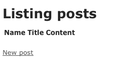

Zaczynamy z Rails
Ten przewodnik jest wprowadzeniem do Ruby on Rails. Po jego przeczytaniu będziesz zaznajomiony z:
-
Instalowaniem Railsów, tworzeniem nowej aplikacji oraz zestawianiem połączenia z bazę danych
-
Ogólnym układem aplikacji
-
Podstawami modelu MVC (Model, View, Controller) oraz architektury RESTful
-
Szybkim generowaniem podstawowych elementów aplikacji
1. Co obejmuje przewodnik?
Ten przewodnik jest przeznaczony dla początkujących, którzy chcą rozpocząć tworzenie aplikacji opartych na Railsach. Nie zakładamy, że masz wcześniejsze doświadczenia z Railsami. Niemniej jednak, do jak najlepszego wykorzystania tego przewodnika, konieczne jest:
-
Ruby - podstawowa wiedza z zakresu języka Ruby
-
RubyGems - narzędzie do dystrybuowania i instalowania paczek zawierających moduły i rozszerzenia języka Ruby
-
Zarządzanie bazą danych SQLite (preferowane), MySQL lub PostgreSQL
Zdecydowanie zaleca się zapoznanie z językiem Ruby przed rozpoczęciem przygody z Railsami. Znacznie łatwiej jest śledzić, co się dzieje w Railsach, rozumiejąc podstawowy składni Ruby. Railsy nie będą w stanie w magiczny sposób zrewolucjonizować sztuki pisania aplikacji internetowych, jeżeli nie masz doświadczenia w używaniu języka. W Internecie istnieje kilka dobrych darmowych źródeł pomocnych w nauce języka Ruby, w tym:
2. Co to są Railsy?
Railsy są internetowo rozwijanym frameworkiem napisanym w języku Ruby. Zostały one tak zaprojektowane, aby ułatwić programowanie aplikacji internetowych, dostarczając zbiór wytycznych, od których każdy deweloper musi zacząć. Pozwalają one na pisanie krótszego kodu, niż jest to możliwe podczas używania większości innych języków i frameworków. Poza tym, projektanci uważają, że wykorzystanie Railsów przy tworzeniu aplikacjach internetowych sprawia przyjemność.
Railsy są "upartym" oprogramowaniem. Oznacza to, że są stworzone, aby zachęcić do wyboru najlepszej drogi, a w niektórych przypadkach - by zniechęcić do wyboru alternatywy. Jeśli nauczysz się "The Rails Way", odkryjesz ogromny wzrost produktywności. Jednak jeżeli podczas pracy z Railsami pozostaniesz przy nawykach charakterystycznych dla programowania w innych językach lub będziesz wykorzystywać wzorce, których już kiedyś się nauczyłeś, efekty mogą nie być aż tak pomyślne.
Filozofia Railsów zawiera kilka zasad:
-
DRY - "Don’t Repeat Yourself" (Nie powtarzaj się) - sugeruje, że pisanie tego samego kodu przez cały czas jest złe.
-
Konwencja Ponad Konfiguracją - Railsy wychodzą z założenia, że wiesz co chcesz zrobić i w jaki sposób, dlatego nie zmuszają Cię do samodzielnego ustawiania każdego najdrobniejszego szczegółu
-
REST jest najlepszym wzorem dla aplikacji internetowych - organizowanie aplikacji wokół zasobów i standardowych zapytań HTTP jest najszybszym możliwym rozwiązaniem
2.1. Architektura MVC
Railsy są zorganizowane wokół trzech komponentów aplikacji: modelu (model), widoku (view), kontrolera (controller), co w skrócie nazywany MVC. Wzorzec MVC obejmuje:
-
Odizolowanie logiki biznesowej od interfejsu użytkownika
-
Łatwość utrzymania kodu zgodnie z zasadą DRY
-
Wyraźne zaznaczenie, gdzie powinny się znajdować różne elementy kodu, co ułatwia zarządzenie tym kodem
2.1.1. Models
Model przedstawia informacje (dane) dla aplikacji i reguły do manipulowania tymi danymi. W przypadku Railsów, modele są głównie wykorzystywane do zarządzania zasadami interakcji z odpowiednią tabelą bazy danych. W większości przypadków jednej tabeli bazy danych odpowiada jeden model w Twojej aplikacji. Większość Twoich aplikacji realizujących logikę biznesową będzie skoncentrowana w modelach.
2.1.2. Widoki
Widoki tworzą interfejs użytkownika aplikacji. W Railsach, widoki są często plikami HTML zawierającymi kod w języku Ruby, wykonujący zadania związane wyłącznie z prezentacją danych. Przede wszystkim są odpowiedzialne za dostarczanie danych do przeglądarki internetowej lub innego narzędzia, które jest używane do oglądania efektów działania Twojej aplikacji.
2.1.3. Kontrolery
Kontrolery "sklejają" modele i widoki. W Railsach odpowiadają za przetwarzanie żądań przychodzących z przeglądarki internetowej, pozyskiwanie danych z modeli i przekazywanie ich do widoków w celu prezentacji.
2.2. Składniki Railsów
Rails dostarcza pełnego zestawu komponentów do tworzenia aplikacji internetowych. Są to:
-
Action Controller
-
Action View
-
Active Record
-
Action Mailer
-
Active Resource
-
Railties
-
Active Support
2.2.1. Action Controller
Action Controller jest komponentem zarządzającym kontrolerami w Railsowej aplikacji. Framework kontrolera Action Controller przetwarza przychodzące do aplikacji Railsowej zapytania, wydobywa z nich parametry i wysyła je do odpowiedniej akcji. Usługi świadczone przez Action Controller obejmują zarządzanie sesją (session), szablon renderowania (template rendering) i przekierowanie zarządzania.
2.2.2. Action View
Action View zarządza widokami Twojej Railsowej aplikacji. Możne tworzyć zarówno HTML i XML wyjście domyślnie. Action View zarządza szablonami renderowania, w tym zagnieżdżonymi szablonami i podszablonami (partial templates) i zagnieżdżonych szablonów, wykorzystując wbudowane wsparcie AJAX.
2.2.3. Active Record
Active Record jest podstawą dla modeli w Railsowej aplikacji. Dostarcza on niezależną bazę danych, dostarcza podstawowe funkcje aplikacji - CRUD (create, read, update and delete - utwórz, odczytaj, aktualizuj, usuń), zaawansowane znajdywanie możliwości i zdolność do wiązania modeli ze sobą pomiędzy różnymi usługami.
2.2.4. Action Mailer
Action Mailer to framework dla tworzenia usług e-mail. Action Mailer może być uzywany do wysyłania e-maili w oparciu o elastyczne szablony lub do odbioru i przetwarzania przychodzących wiadomości.
2.2.5. Active Resource
Active Resource dostarcza framework dla zarządzania połączeniami pomiędzy obiektami biznesowymi internetowych serwisów RESTful. Implementuje sposób mapowania obiektów internetowych na lokalne obiekty w oparciu o semantykę CRUD.
2.2.6. Railties
Railties jest rdzeniem kodu Rails, który buduje nowe aplikacje Railsowe i skleja ze sobą różne frameworki w Railsowych aplikacjach.
2.2.7. Active Support
Active Support jest obszernym zbiorem użytecznych klas oraz standardowych bibliotek rozszerzeń dla Ruby, które są wykorzystywane w Railsach, zarówno przez rdzeń kodu, jak i Twoje aplikacje.
2.3. REST
Praca doktorska Roya Fieldinga Architectural Styles and the Design of Network-based Software Architectures jest powszechnie uznawana za podstawę działania architektury RESTful. Na szczęście, nie musisz czytać tego całego dokumentu, aby zrozumieć, jak działa REST w Rails. REST (Representational State Transfer) jest stylem architektury oprogramowania sprowadzającym się do dwóch podstawowych zasad:
-
Korzystanie z zasobów identyfikatorów (które na potrzeby tego przewodnika możesz traktować jakoadresy URL) w celu reprezentacji tych zasobów
-
Przesyłanie reprezentacji stanów tego zasobu pomiędzy elementami systemu.
Na przykład, aplikacja Railsowa takie zapytanie:
DELETE /photos/17
będzie rozumiała jako odniesienia do źródła zdjęcia o ID 17, oraz wskaże żądane działanie - usunięcie tego źródła. REST to naturalny styl architektury aplikacji internetowych i Railsy czynią go jeszcze bardziej naturalnym, poprzez korzystanie z konwencji, które pozwalają na nie przejmowanie się złożnością RESTful oraz różnicami pomiędzy przeglądarkami.
Jeśli chciałbyś dowiedzieć się czegoś więcej na temat REST jako styl architektonicznego, polecam bardziej przystępne źródła od tezy Fieldinga:
3. Tworzenie nowego projektu w Railsach
Z pomocą tego przewodnika, będziesz mógł utworzyć projekt prostego bloga w Railsach. Zanim przystąpisz do tworzenia aplikacji, upewnij się, że masz zainstalowane Railsy.
3.1. Instalacja środowiska Rails
W większości przypadków, najprostszym sposobem zainstalowania Railsów jest skorzystania z RubyGems:
$ gem install rails
|
|
Istnieją pewne szczególne okoliczności, w których można zastosować alternatywną strategię instalacji: |
-
Jeśli pracujesz w systemie Windows, będzie Ci łatwiej zainstalować Instant Rails. Powinieneś jednak uważać instalując Instant Rails, aby wersja Railsów była aktualna. Ponadto, Windowsowa wersja Railsów jest ogólnie mniej przyjazna w użyciu niż na innych systemach operacyjnych. Jeśli to możliwe, polecamy korzystanie z Linuksowej maszyny wirtualnej.
-
Jeżeli chcesz być na bieżąco z najnowszymi zmianami w środowisku Rails, proponujemy skopiowanie kodu źródłowego z githuba Aczkolwiek nie jest to zalecane dla początkujących
3.2. Tworzenie bloga
Otwórz terminal i przejdź do folderu, w którym posiadasz odpowiednie uprawnienia do tworzenia plików, a następnie wpisz polecenie:
$ rails blog
To stworzy Railsową aplikację, która korzysta z bazy danych SQLite. Jeśli wolisz korzystać z MySQL, uruchom zamiast tego polecenie:
$ rails blog -d mysql
A jeśli używasz PostgreSQL do przechowywania danych, zastosuj polecenie:
$ rails blog -d postgresql
|
|
Uruchamiając raili -h możesz zobaczyć wszystkie akceptowane przez aplikację Railsową przełączniki. : |
Po utworzeniu aplikacji, przejdź do odpowiedniego folderu, aby móc kontynuować swoją pracę:
$ cd blog
Railsy utworzy folder o nazwie "blog" w Twoim roboczym katalogu. Otwórz ten folder i przyjrzyj się jego zawartości. Podczas pracy z tym przewodnikiem, w większości będziemy korzystać z folderu app/, ale poniżej możesz zapoznać się z podstawowymi funkcjami, które domyślnie utworzą Railsy.
| File/Folder | Purpose |
|---|---|
README |
Jest to krótka instrukcja dla danej aplikacji. Użyj jej, aby poinformować innych między innymi o tym, jak działa Twoja aplikacja i jak ją można uruchomić. |
Rakefile |
Plik ten zawiera listę działań aplikacji, które można uruchomić poprzez terminal. |
app/ |
Folder zawiera kontrolery, modele i widoki dla danej aplikacji. Na tym folderze będziemy koncentrować się w dalszej części tego przewodnika. |
config/ |
Folder zawierający pliki konfiguracyjne dla aplikacji, odpowiadające za sposoby uruchamiania, bazę danych, ścieżki dostępu etc. |
db/ |
Pokazuje aktualny schemat bazy danych, jak również migracje (migration) baz danych. |
doc/ |
Pełna dokumentacja Twojej aplikacji. |
lib/ |
Dodatkowe moduły dla Twojej aplikacji, których nie uwzględniono w tym przewodniku |
log/ |
Archiwum plików |
public/ |
Jedyny całkowicie dostępny publicznie folder. Są to wszelkie zdjęcia, arkusze stylów (CSS), To właśnie zdjęcia, JavaScript, arkuszy stylów (CSS), JavaScript i inne statyczne pliki wyjściowe |
script/ |
Skrypty dostarczone przez Rails w celu wykonywania powtarzających się zadań, takich jak analiza porównawcza, instalowanie wtyczek (plugin) i uruchamianiu konsoli lub serwera WWW |
test/ |
Testy jednostkowe, tak zwane "fixtures" oraz inne narzędzia służące do przeprowadzania testów. Są one opisane w: Testowanie aplikacji Rails |
tmp/ |
Pliki tymczasowe |
vendor/ |
Miejsce na kod, którego sami nie napisaliśmy, ale chcemy wykorzystać (tak zwani "trzeci dostawcy"). W standardowej aplikacji środowiska Rails, zawiera Ruby Gems, kod źródłowy Rubiego (jeśli zastosujesz go w swoim projekcie) i wszystkie dodatkowe wtyczki z gotowym kodem. |
3.3. Konfiguracja bazy danych
Każda aplikacja Railsowa korzysta z bazy danych. Rodzaj baza danych, której używamy, jest określony w pliku konfiguracyjnym config/database.yml. Jeśli otworzysz ten plik w nowej aplikacji Railsowej, zostanie wyświetlona domyślna konfiguracja bazy danych SQLite. Plik zawiera części dla trzech różnych środowisk, w których Rails może być uruchomiony domyślnie:
-
środowisko rozwojowe jest używane na komputerze programisty jako interfejs użytkownika
-
środowisko badawcze służy do uruchamiania automatycznych testów
-
środowisko produkcyjne jest używane podczas przystosowywania aplikacji dla zwykłych użytkowników
3.3.1. Konfiguracja bazy danych SQLite
Railsy mają wbudowaną obsługę SQLite, który jest lekką, nie obciążającą serwera aplikacją bazy danych. Podczas przeciążenia SQLite przez środowisko produkcyjne, wciąż dobrze działa środowisko testowe i rozwojowe. Railsy domyślnie używają SQLite tworząc nowy projekt, ale zawsze można to później zmienić.
Poniżej prezentujemy częśc domyślnej konfiguracji pliku z informacji dla środowiska rozwojowego:
development: adapter: sqlite3 database: db/development.sqlite3 timeout: 5000
Jeśli nie masz żadnej zainstalowanej bazy danych, najłatwiej będzie Ci skorzystać z SQLite, w czym może być pomocny Ruby Gems (Posiadacze Maca z OS X 10.5 lub nowszym mają to zainstalowane domyślnie):
$ gem install sqlite3-ruby
3.3.2. Konfiguracja bazy danych MySQL
Jeżeli zdecydujesz się na używanie bazy danych MySQL, Twój plik config/database.yml będzie wyglądał trochę inaczej:
development: adapter: mysql encoding: utf8 database: blog_development username: root password: socket: /tmp/mysql.sock
Ta konfiguracja powinna działac bez problemu, jeśli Twoja instalacja MySQLa nie ma wprowadzonego hasła dla super-uzytkownika (root user). Jeśli jednak jest inaczej, koniecznie zmień nazwę użytkownika oraz hasło w powyższym kodzie.
3.3.3. Konfiguracja Bazy Danych PostgreSQL
Używając PostgreSQL Twój config/database.yml zostanie zmodyfikowany do pracy z tą bazą danych:
development: adapter: postgresql encoding: unicode database: blog_development username: blog password:
Konieczna jest zmiana nazwy użytkownika oraz hasła w kodzie dla części projektowej,
3.3.4. Tworzenie Bazy Danych
Teraz, gdy masz już skonfigurowaną bazę danych, czas by Railsy stworzyły dla ciebie pustą bazę danych. Możesz to zrobić uruchamiając komendę "rake":
$ rake db:create|
|
"Rake" jest poleceniem startującym ogólnego zastosowania, które Railsy używają do wielu rzeczy. By zobaczyć dostępne dla nich komendy uruchom "rake -T". : |
4. Witaj Rails!
Jednym z tradycyjnych sposobów uczenia się nowego języka jest pobieżne przeglądnięcie jego tekstu. By tak zrobić w Railsach, konieczne jest stworzenie przynajmniej kontrolera oraz widoku.. Na szczęście możesz to zrobić używając pojedynczej komendy, wpisując ją do terminala:
$ script/generate controller home index
|
|
Jeżeli używasz Windowsa, lub gdy twój Ruby jest skonfigurowany w niestandardowy sposób, możliwe że będziesz potrzebował przekazać komendy script Railsów bezpośrednio do Ruby’ego: ruby script/generate controller home index. |
Railsy stworzyły dla Ciebie parę plików, włączając w to app/views/home/index.html.erb - czyli szablon, który będzie używany do pokazywania efektów index action (method) w home kontrolerze. Otwórz ten plik w Twoim edytorze tekstów i dopisz do niego tę pojedynczą linijkę kodu:
<h1>Hello, Rails!</h1>
4.1. Uruchamianie serwera WWW.
W chwili obecnej, za pomocą jedynie dwóch komend, masz gotowy i działający Railsowy program! Uruchamiając przeglądarkę na swoim komputerze programisty, za pomocą kolejnej komendy startowej: $ script/Server, będziesz mógł go zobaczyć.
$ script/server
Domyślnie spowoduje to odpalenie instancji serwera aplikacyjnego Mongrel. By zobaczyć jak działa Twój program, otwórz okno przeglądarki i przejdź do http://localhost:3000. Powinieneś zobaczyć Railsową, domyślną stronę informacyjną:
|
|
By zatrzymać serwer WWW naciśnij Ctrl+C w oknie terminalu podczas jego działania. Generalnie, Railsy w "trybie tworzenia" (development mode) nie wymagają zatrzymywania serwera, by wprowadzić Twoje zmiany w plikach - zostaną one automatycznie wprowadzone na serwer. |
Ekran powitalny jest pierwszą próbą dla nowego programu napisanego w Railsach - upewnia nas, że oprogramowanie którym dysponujemy jest poprawnie skonfigurowana do działania strony. Aby ją zobaczyć, przejdź do http://localhost:3000/home/index.
4.2. Konfiguracja Strony Domowej Programu.
Prawdopodobnie chcesz zamienić domyślną stronę startową ze stroną Twojego programu. Pierwszym krokiem jest wykasowanie z niego strony domyślnej:
$ rm public/index.htmlPowinieneś teraz wskazać Railsowi gdzie Twoja strona domowa jest zlokalizowana. Otwórz plik config/routes.rb w swoim edytorze - jest on plikiem routingowy (routing file) Twojego programu. Zawiera wpisy w specjalnym DSL (specyficzny język domeny) które pokazują Railsowi w jaki sposób połączyć żądania kontrolerów oraz akcji. Na dole tego pliku znajdują się domyślne ścieżki (default routes):
map.connect ':controller/:action/:id' map.connect ':controller/:action/:id.:format'
Domyślne ścieżki przenoszą proste żądania, takie jak /home/index: Railsy tłumaczą je w postaci prośby do akcji index w home kontrolerze. Kolejny przykład, /posts/edit/1 uruchomi akcję edit w posts kontrollera z id 1.
By połączyć Twoją stronę domową, będziesz potrzebować kolejnej linii do pliku routingu, powyżej domyślnej ścieżki:
map.root :controller => "home"
Ta linijka ilustruje jeden mały kawałek podejścia zwanego „konwencja ponad konfiguracją” ("convention over configuration"): jeżeli nie podasz żadnej akcji, Railsy założą domyślnie akcję index.
Po przejściu do strony http://localhost:3000 , zobaczysz widok home/index .
|
|
Więcej informacji na temat routingu znajdziesz w Rails Routing from the Outside In. |
5. Szybki start dzięki rusztowaniu.
Railsowe rusztowanie (scaffolding) jest szybkim sposobem na stworzenia znacznej części programu. Jeśli chcesz stworzyć modele, widoki i kontrolery dla nowych zasobów w pojedynczej operacji, to jest to odpowiednim narzędziem dla Ciebie.
6. Tworzenie obiektu
W przypadku programów takich jak blog, możesz zacząć od stworzenia obiektu typu Post („Post resource”), który odpowiada za pojedynczy post blogu, w oparciu o rusztowania. By to zrobić, wprowadź następującą komendę do terminalu:
$ script/generate scaffold Post name:string title:string content:text
|
|
Chociaż rusztowanie pozwoli Ci szybko rozpocząć pisanie programu, ten uniwersalny, działający wszędzie kod raczej nie będzie idealnie pasować do Twojej aplikacji. W większości przypadków będziesz musiał samodzielnie dokonać w nim zmian. Wielu doświadczonych programistów Rails unika używania rusztowań na rzecz pisania większości kodu źródłowego od podstaw, bez używania gotowych wzorców. |
Generator rusztowania zbuduje w Twoim programie 14 plików, wspólnie z paroma folderami, i jeden dodatkowo edytuje. Oto krótki przegląd tego co tworzy:
| File | Purpose |
|---|---|
app/models/post.rb |
Model Postu |
db/migrate/20081013124235_create_posts.rb |
Migracja do tworzenia tabel postów w Twojej bazie danych (nazwa którą wpiszesz będzie zawierać rózne znaczniki czasowe) |
app/views/posts/index.html.erb |
Widok dla indeksu wszystkich postów |
app/views/posts/show.html.erb |
Widok dla pojedynczego postu |
app/views/posts/new.html.erb |
Widok dla tworzenia nowego postu |
app/views/posts/edit.html.erb |
Widok dla edycji postu |
app/views/layouts/posts.html.erb |
Widok określający całościowy wygląd i działanie innych widoków dla postów. |
public/stylesheets/scaffold.css |
Poprawianie wyglądu przy użyciu szablonu stylów CSS |
app/controllers/posts_controller.rb |
Kontroler postów |
test/functional/posts_controller_test.rb |
Testy funkcjonalności dla kontrolerów postów |
app/helpers/posts_helper.rb |
Helpery (helper functions) używane przy widokach postów |
config/routes.rb |
Plik zawierający informacje routingowe dla postów |
test/fixtures/posts.yml |
Posty testowe |
test/unit/post_test.rb |
Testy funkcjonalności dla modeli postów |
6.1. Uruchamianie Migracji
Jednym z produktów komendy: script/generate scaffold jest database migration. Migracje są jedną z klas Ruby, które upraszczają tworzenie i modyfikowanie baz danych tabel. Railsy używają komendy „rake” by uruchamiać migracje, ale możliwe jest jej wycofanie po tym jak, została dodana do Twojej bazy danych. Nazwy plików migracji uwzględniają znaczniki czasowe by zapewnić ich przetwarzanie w porządku, w jakim zostały stworzone.
Oto co znajdziesz, gdy zajrzysz do pliku db/migrate/20090113124235_create_posts.rb (jego nazwa u Ciebie może się trochę różnić):
class CreatePosts < ActiveRecord::Migration def self.up create_table :posts do |t| t.string :name t.string :title t.text :content t.timestamps end end def self.down drop_table :posts end end
Gdybyś chciał zawrzeć ten kod w słowach, brzmiałby on mniej więcej tak: gdy migracja jest uruchomiona, tworzy tabelę o nazwie posts z dwoma szeregami kolumn (name i title) i tekst kolumny (content), a wraz z nią pola znaczników czasu by śledzić jej tworzenie oraz aktualizowanie. Więcej szczegółów na temat sposobu pisania migracji znajdziesz w przewodniku Rails Database Migrations.
Teraz możesz użyć komendy „rake” by uruchomić migracje:
$ rake db:create $ rake db:migrate
|
|
Ponieważ domyślnie pracujesz w środowisku rozwojowym, ta komenda wykona się na bazie danych zdefiniowanej w sekcji development pliku: config/database.yml. |
6.2. Dodawanie hiperłącza.
By połączyć posty ze stroną domową, którą już stworzyłeś, możesz dodać do niej hiperłącze. Otwórz /app/views/home/index.html.erb i dopisz do niego:
<h1>Hello, Rails!</h1> <%= link_to "My Blog", posts_path %>
Metoda link_to jest jednym z helperów pomagających kreować widoki w Railsach. Tworzy ona hiperłącze z tekstem do wyświetlenia oraz informacją, gdzie prowadzi – w tym wypadku ze ścieżką do postu.
6.3. Praca z postami w przeglądarce
Teraz jesteś już gotowy do pracy z postami. Na początek przejdź do: http://localhost:3000 i kliknij w link „Mój blog”.

Jest to rezultat renderingu indeksu widoku Twoich postów. Aktualnie nie ma żadnych wpisów w bazie danych, ale zawsze możesz je utworzyć klikając w link „nowa wiadomość”. Możesz również przeglądać i edytować posty, a nawet je wykasować. Cały układ logiczny i HTML obsługuje pojedyncze polecenie script/generał scaffold.
|
|
W środowisku rozwojowym (na nim domyślnie pracujesz) z każdym żądaniem przeglądarki Railsy wgrywają od nowa program, dzięki czemu nie jest konieczne wyłączanie serwera WWW. |
Gratulację! Wykonałeś swoją pierwszą aplikację w Railsach! Nadszedł czas, aby przyjrzeć się efektom pracy.
6.4. Model
Plik modelu app/models/post.rb jest tak samo prosty w obsłudze jak jego tworzenie:
class Post < ActiveRecord::Base end
- Możliwości zmian tego pliku nie jest dużo – nie wolno jednak zapomnieć, że klasa Post dziedziczy z +ActiveRecord
-
Base+. Active Rekord za darmo dostarcza wielu funkcji dla Twoich Railsów, włączając w to podstawową baze danych operacji CRUD (Tworzenie, Czytanie, Aktualizowanie, Niszczenie) czy uwierzytelnianie danych – podobnie jak wsparcie zaawansowanego wyszukiwania i zdolność do wiązania wielu różnych modeli jeden z drugim.
6.5. Sprawdzanie poprawności danych
Railsy są wyposażone w metodę, która pomoże Ci sprawdzić poprawność danych wysyłanych do modeli. Wprowadź poniższe zmiany do pliku: app/models/post.rb
class Post < ActiveRecord::Base validates_presence_of :name, :title validates_length_of :title, :minimum => 5 end
Dzięki nim mamy pewność, że każdy post będzie mieć nazwę oraz tytuł, a ten ostatni nie będzie miał mniej niż 5 znaków. Railsy mogą sprawdzać różne warunki w modelu, włączając w to obecność lub unikalność kolumn, ich format i istnienie związanych z nimi obiektów.
6.6. Używanie konsoli
By zobaczyć, jak sprawdzanie poprawności danych działa w praktyce, użyjemy konsoli. Konsola, w postaci linii komend, jest narzędziem, które umożliwia Ci wykonywanie kodów Ruby’ego w ramach działania Twojej aplikacji:
$ script/console
- Możesz jej użyć do pracy z modelami Twojego programu
>> p = Post.create(:content => "A new post") => #<Post id: nil, name: nil, title: nil, content: "A new post", created_at: nil, updated_at: nil> >> p.save => false >> p.errors => #<ActiveRecord::Errors:0x23bcf0c @base=#<Post id: nil, name: nil, title: nil, content: "A new post", created_at: nil, updated_at: nil>, @errors={"name"=>["can't be blank"], "title"=>["can't be blank", "is too short (minimum is 5 characters)"]}>
Powyższy kod przedstawia informację, jaką otrzymasz, gdy chcesz stworzyć nowy, ale błędny Post. Mechanizm jest następujący: przy próbie zapisania pojawia się wartość zwrotna false (oznaczającą, że zapisanie się nie powiodło), a kod wyszczególnia nam wszystkie znalezione błędy errors.
|
|
W przeciwieństwie do serwerów WWW, konsola nie wprowadza automatycznie Twojego kodu na nowo z każdą linią. By dokonać zmian w Twoim modelu za pomocą konsoli, musisz użyć komendy reload! |
6.7. Listowanie postów
Najłatwiejszym sposobem na zapoznanie się z możliwościami programu jest kod, który listuje wszystkie posty. Otwórz plik: app/controllers/posts_controller.rb i przyjrzy się akcji index
def index @posts = Post.find(:all) respond_to do |format| format.html # index.html.erb format.xml { render :xml => @posts } end end
Powyższy kod przypisuje przykładowa zmienną @posts do tablicy wszystkich postów w bazie danych. Post.find(:all) lub Post.all tworzy zawołanie dla modelu Post, który bezwarunkowo zwraca wszystkie posty z bazy danych.
|
|
Więcej informacji na temat znajdowania rekordów za pomocą Active Record znajdziesz w Active Record Finders |
Blok respond_to obsługuje obydwa zawołania dla tej akcji - zarówno HTML jak i XML. Jeśli przejdziesz do http://localhost:3000/posts.xml, to zobaczysz wszystkie posty w formacie XML. Natomiast format HTML znajduję się w widoku app/views/posts, nazwanym tak samo jak odpowiadająca mu akcja. Rails same przenoszą wszystkie przykładowe zmienne z dostępnych akcji do widoku. Oto app/view/posts/index.html.erb:
<h1>Listing posts</h1> <table> <tr> <th>Name</th> <th>Title</th> <th>Content</th> </tr> <% for post in @posts %> <tr> <td><%=h post.name %></td> <td><%=h post.title %></td> <td><%=h post.content %></td> <td><%= link_to 'Show', post %></td> <td><%= link_to 'Edit', edit_post_path(post) %></td> <td><%= link_to 'Destroy', post, :confirm => 'Are you sure?', :method => :delete %></td> </tr> <% end %> </table> <br /> <%= link_to 'New post', new_post_path %>
Widok wyświetla treść tablicy @posts, by pokazać zawartość oraz linki. Przyjrzymy się uważnie paru jego aspektom:
-
h to helper metody który ujednolica wyświetlane danych, zapobiegający atakom „cross-site scripting”
-
link_to buduje hiperłącze dla określonej lokalizacji
-
edit_post_path jest helperem, który Railsy udostępniają w ramach routingu RESTful. Zobaczysz jeszcze sporo różnych rodzajów takich helperów dla wielu, znajdujących się w kontrolerze, akcji.
|
|
Więcej szczegółów na temat procesu renderingu znajdziesz w Layouts and Rendering in Rails. |
6.8. Personalizacja Layoutu
Widok stanowi tylko część całego procesu przedstawiania przez HTML Twojej strony www. Railsy posiadają też różne gotowe layouty layouts, w których trzymane są widoki. Renderowanie widoku dla przeglądarki odbywa się poprzez umieszczanie widoku HTML wewnątrz layoutu HTML. Komenda script/generate scaffold automatycznie tworzy dla postu domyślny layout: app/views/layouts/posts.html.erb. Używając edytora zmodyfikuj go w następujący sposób:
<!DOCTYPE html PUBLIC "-//W3C//DTD XHTML 1.0 Transitional//EN" "http://www.w3.org/TR/xhtml1/DTD/xhtml1-transitional.dtd"> <html xmlns="http://www.w3.org/1999/xhtml" xml:lang="en" lang="en"> <head> <meta http-equiv="content-type" content="text/html;charset=UTF-8" /> <title>Posts: <%= controller.action_name %></title> <%= stylesheet_link_tag 'scaffold' %> </head> <body style="background: #EEEEEE;"> <p style="color: green"><%= flash[:notice] %></p> <%= yield %> </body> </html>
Gdy teraz odświeżysz stronę /posts, zobaczysz szare tło. Taki sam będzie używany dla wszystkich widoków postów.
6.9. Tworzenie nowego postu.
Nowy post tworzy się za pomocą dwóch akcji. Pierwszą jest new, która tworzy nowy, pusty obiekt Post:
def new @post = Post.new respond_to do |format| format.html # new.html.erb format.xml { render :xml => @post } end end
Widok new.html.erb wyświetli dla użytkownika pusty Post:
<h1>New post</h1> <% form_for(@post) do |f| %> <%= f.error_messages %> <p> <%= f.label :name %><br /> <%= f.text_field :name %> </p> <p> <%= f.label :title %><br /> <%= f.text_field :title %> </p> <p> <%= f.label :content %><br /> <%= f.text_area :content %> </p> <p> <%= f.submit "Create" %> </p> <% end %> <%= link_to 'Back', posts_path %>
Blok form_for jest używany do tworzenia formy HTML. Wewnątrz niego masz dostęp do metod, które umożliwiają zbudowanie różnorodnych sposobów kontroli form. Przykładowo: f.text_field :name prosi Railsy, by stworzyły w danej formie pole do wprowadzania tekstu i połączyły go z nazwą przykładowo wyświetlanego atrybutu. Możesz użyć tej metody tylko z takimi atrybutami modelu, które są podstawą formy (w tym wypadku name, title, i content). Rails preferencyjnie uzywa form_for do stworzenia surowego kodu HTML. Dzięki temu jest on bardziej zwięzły i wyraźnie widać związek formy z konkretnym modelem.
|
|
Jeśli potrzebujesz stworzyć formę HTML, która pokazuje dowolne pole, nie pasujące do modelu, powinieneś użyć metody form_tag, umożliwiające szybkie zbudowanie form, których nie trzeba łączyć z konkretnym modelem. |
Gdy użytkownik kliknie na przycisk create, przeglądarka wyśle informacje zwrotną do metody kontrolera create (Railsy wiedzą, że mają posłużyć się metodą create, ponieważ forma jest wysyłana za pomocą żądania HTTP POST – jest to jedna z tych umownych rzeczy, o których wspomniałem wcześniej):
def create @post = Post.new(params[:post]) respond_to do |format| if @post.save flash[:notice] = 'Post was successfully created.' format.html { redirect_to(@post) } format.xml { render :xml => @post, :status => :created, :location => @post } else format.html { render :action => "new" } format.xml { render :xml => @post.errors, :status => :unprocessable_entity } end end end
Akcja create tworzy nowy obiekt Post z danych przekazanymi przez użytkownika w formie, który Railsy udostępnią w params. Po zapisaniu nowego postu, używają one flash[:notice] do stworzenia wiadomości informacyjnej dla użytkownika oraz przekierowują do wyświetlanej akcji. Jeśli napotka jakiś problem, akcja create pokaże po raz drugi tylko widok new , ale wraz z wiadomością o błędzie.
Railsy zapewniają hash: flash (zwyczajowo nazywany po prostu Flashem), stąd ta wiadomość może być przenoszona do innej akcji, dostarczaną użytkownikowi wraz z przydatnymi informacjami na temat statusu żądania. W przypadku create użytkownik nigdy nie widzi strony renderowanej podczas procesu tworzenia postu, ponieważ jest przekierowywany do nowego postu dopiero po zapisaniu rekordu. Flash przenosi informacje do następnej akcji, zatem gdy użytkownik jest przekierowywany spowrotem do akcji show, ukazuje mu się informacja „Post został stworzony”.
6.10. Prezentacja pojedynczego postu
Gdy klikniesz w link show dla postu na stronie głównej, przeniesie Cię ona do adresu http://localhost:3000/posts/1 (lub podobnego). Railsy traktują to jako prośbę o zasoby skierowaną do akcji show i przechodzącą w 1 z parametrem :id. Akcja show wygląda tak:
def show @post = Post.find(params[:id]) respond_to do |format| format.html # show.html.erb format.xml { render :xml => @post } end end
Akcja show używa Post.find, by znaleźć w bazie danych pojedynczy rekord z jej wartością id. Railsy wyświetlają go używając show.html.erb:
<p> <b>Name:</b> <%=h @post.name %> </p> <p> <b>Title:</b> <%=h @post.title %> </p> <p> <b>Content:</b> <%=h @post.content %> </p> <%= link_to 'Edit', edit_post_path(@post) %> | <%= link_to 'Back', posts_path %>
6.11. Edytowanie postów
Edytowanie postu, podobnie jak tworzenie nowego, odbywa się dwustopniowo. Pierwszym krokiem jest polecenie edit_post_path(@post) odnoszące się do konkretnego postu. To wywołuje nam akcję edit w kontrolerze.:
def edit @post = Post.find(params[:id]) end
Po znalezieniu zażądanego postu, Railsy, by nam go pokazać, używają edit.html.erb :
<h1>Editing post</h1> <% form_for(@post) do |f| %> <%= f.error_messages %> <p> <%= f.label :name %><br /> <%= f.text_field :name %> </p> <p> <%= f.label :title %><br /> <%= f.text_field :title %> </p> <p> <%= f.label :content %><br /> <%= f.text_area :content %> </p> <p> <%= f.submit "Update" %> </p> <% end %> <%= link_to 'Show', @post %> | <%= link_to 'Back', posts_path %>
Składając stworzoną przez ten widok formę, odwołujemy się do akcji update wewnątrz kontrolera:
def update @post = Post.find(params[:id]) respond_to do |format| if @post.update_attributes(params[:post]) flash[:notice] = 'Post was successfully updated.' format.html { redirect_to(@post) } format.xml { head :ok } else format.html { render :action => "edit" } format.xml { render :xml => @post.errors, :status => :unprocessable_entity } end end end
W akcji update Railsy używają na początku parametru :id, przechodząc z widoku edycji do rekordu zlokalizowanego w edytowanej bazie. Update_attributes wywołuje, a następnie wykorzystuje pozostałe parametry, które zażądaliśmy i dołącza je do tego rekordu. Jeśli wszystko pójdzie dobrze, to użytkownik jest przekierowywany do widoku show postu. Gdy jednak wystąpią jakieś problemy, Railsy zwracają go do edit, aby umożliwić mu poprawienie błędów.
|
|
Uważni czytelnicy zauważa zapewne, że deklaracja form_for jest identyczna dla widoków new i edit. Railsy generują inny kod dla każdego z formularzy, ponieważ są wystarczająco mądre, żeby zauważyć, że w jednym przypadku otrzymują nowy rekord, który jeszcze nie był zapisany, natomiast w drugim istniejący rekord, który już został zapisany w bazie danych. W produkcyjnej aplikacji Rails normalnie wyeliminowałbyś tę duplikację poprzez przeniesienie powtarzającego się kodu do podszablonu (partial template), który następnie byłby włączany w oba nadrzędne szablony. Jednakże generator rusztowań próbuje nie robić zbyt wielu założeń i tworzy kod, który łatwo modyfikować, jeżeli chcesz mieć różne formularze do akcji create i edit. |
6.12. Kasowanie Postu
Ostatecznie, klikając na jednym z linków kategorii destroy, wysyłane jest powiązane id do akcji destroy :
def destroy @post = Post.find(params[:id]) @post.destroy respond_to do |format| format.html { redirect_to(posts_url) } format.xml { head :ok } end end
Metoda destroy modelu Active Record natychmiast usuwa odpowiadający mu rekord z bazy danych. Gdy to zostanie zrobione, nie ma już żadnego rekordu do wyświetlenia, dlatego Railsy przekierowują przeglądarkę użytkownika prosto do widoku index tego modelu.
7. Wykorzystanie zasady DRY
W tym miejscu warto byś przyjrzał się paru narzędziom, które Railsy oferują do usuwania duplikatów w Twoim kodzie. Szczególnie zwrócimy uwagę na te, które możesz czasami używać do ich eliminacji z widoków oraz na filtrach (filters), które są pomocne przy takich operacjach.
7.1. Używanie podszablonów do eliminacji widocznych duplikatów.
Jak już widziałeś wcześniej, widok generatora rusztowania dla akcji new i edit jest bardzo podobny. YMożesz przenieść dzielony kod prosto do podszablonu partial. Wymaga to edytowania widoków new i edit oraz dodania nowego szablonu. Nowy _form.html.erb szablon powinien być zapisany w tym samym folderze app/views/posts co plik, z którego został on wyprowadzony. Zauważ, że nazwa tego pliku zaczyna się od podkreślenia ' _ '(underscore) - jest to przyjęte przez Rails nazewnictwo dla podszablonów
new.html.erb:
<h1>New post</h1> <%= render :partial => "form" %> <%= link_to 'Back', posts_path %>
edit.html.erb:
<h1>Editing post</h1> <%= render :partial => "form" %> <%= link_to 'Show', @post %> | <%= link_to 'Back', posts_path %>
_form.html.erb:
<% form_for(@post) do |f| %> <%= f.error_messages %> <p> <%= f.label :name %><br /> <%= f.text_field :name %> </p> <p> <%= f.label :title, "title" %><br /> <%= f.text_field :title %> </p> <p> <%= f.label :content %><br /> <%= f.text_area :content %> </p> <p> <%= f.submit "Save" %> </p> <% end %>
Teraz, gdy Railsy generują widok new lub edit, umieszczą go w szablonie _form we wskazanym punkcie. Zwróć uwagę na nazewnictwo dla szablonów: jeśli odnosisz się do jego formy o nazwie form wewnątrz widoku, odpowiadający mu plik to _form.html.erb, z podkreśleniem ' _ ' na początku.
FWięcej informacji na temat szablonów uzyskasz w przewodniku Layouts and Rending in Rails.
7.2. Używanie filtrów do eliminacji powtórzeń w kontrolerze
W tym miejscu, jeśli popatrzysz na kontroler pod kątem postów, zobaczysz parę duplikatów:
class PostsController < ApplicationController # ... def show @post = Post.find(params[:id]) # ... end def edit @post = Post.find(params[:id]) end def update @post = Post.find(params[:id]) # ... end def destroy @post = Post.find(params[:id]) # ... end end
Cztery wystąpienia tej samej linii kodu są niezgodne z zasadą DRY. Railsy zapewniają filtry (filters) jako sposób na tego typu powtarzający się kod. W tym przypadku możesz poprawić pewne części używając before_filter:
class PostsController < ApplicationController before_filter :find_post, :only => [:show, :edit, :update, :destroy] # ... def show # ... end def edit end def update # ... end def destroy # ... end private def find_post @post = Post.find(params[:id]) end end
Railsy uruchamiają before filters przed każdą akcją w kontrolerze. Możesz użyć polecenia :only do nałożenia ograniczenia przed filtrem, lub polecenia :except , by dokonać szczególnego pominięcia akcji tylko dla niektórych z nich. Railsy pozwalają Ci także definiować after filters , które uruchamiają się po przetworzeniu akcji, analogicznie jak otaczają ją around filters w trakcie jej przetwarzania. Do tego filtry mogą być także definiowane jako zewnętrzne klasy, by ułatwić przenoszenie ich pomiędzy kontrolerami.
Więcej informacji o filtrach znajdziesz w przewodniku:Action Controller Basics.
8. Dodawanie drugiego modelu
Skoro widziałeś już jak buduje się model przy użyciu rusztowania, nadszedł czas by dodać do tego programu drugi model. Na nim opierać się będą komentarze w postach na blogu.
8.1. Tworzenie modelu
Modele w Rails używają nazw w liczbie pojedynczej, a do komunikowania się z bazą danych nazw w liczbie mnogiej. Przyjęło się, że dla modelu, w którym znajdują się komentarze używamy nazwy danego komentarza. Nawet jeśli nie chcesz używać całej aparatury opartej na rusztowaniach, pamiętaj, że większość programistów piszących w Railsach dalej używa generatorów, by stworzyć takie rzeczy jak modele czy kontrolery. Aby stworzyć nowy model, wprowadź do terminalu następującą komendę:
$ script/generate model Comment commenter:string body:text post:references
Wygeneruje ona 4 pliki:
-
app/models/comment.rb - The model
-
+db/migrate/20081013214407_create_comments.rb - The migration
-
test/unit/comment_test.rb and test/fixtures/comments.yml - The test harness.
Przyjrzyjmy się: comment.rb:
class Comment < ActiveRecord::Base belongs_to :post end
To model bardzo podobny do post.rb , który widziałeś już wcześniej. Różnica znajduję się w lini belongs_to :post , która uruchamia Active Record association. Nauczysz się więcej na temat powiązań w następnej części niniejszego poradnika.
Dodatkowo do tego modelu Railsów tworzą migrację (migration), by stworzyć zgodną tabele bazy danych:
class CreateComments < ActiveRecord::Migration def self.up create_table :comments do |t| t.string :commenter t.text :body t.references :post t.timestamps end end def self.down drop_table :comments end end
Linijka t.references tworzy zewnętrzny klucz kolumn dla połączeń pomiędzy dwoma modelami. Możesz spróbować uruchomić migracje:
$ rake db:migrateRailsy są na tyle sprytne, że wykonują tylko te migracje, które nie są sprzeczne z działającą bazą danych.
8.2. Łączenie modeli
Asocjacja Active Record pozwala Ci łatwo zdefiniować związek (asocjacje) pomiędzy dwoma modelami. W przypadku komentarzy oraz postów możesz go zapisać w ten sposób:
-
Każdy komentarz należy do jednego postu
-
Jeden post może mieć wiele komentarzy
Tak naprawdę jest to bardzo podobne do składni jaką Railsy używają do deklarowania tych połączeń (asocjacji). Widziałeś już linie kodu umieszczoną w modelu komentarza, która przypisuje każdy komentarz do postu:
class Comment < ActiveRecord::Base belongs_to :post end
Żeby dodać drugą stronę asocjacji konieczna jest edycja pliku post.rb :
class Post < ActiveRecord::Base validates_presence_of :name, :title validates_length_of :title, :minimum => 5 has_many :comments end
Dzięki tym dwóm deklaracjom w znaczny sposób automatyzujemy sposób zachowania się naszego programu. Praktycznie wygląda to tak: jeśli masz przykładową zmienną @post zawierającą post, możesz otrzymać wszystkie komentarze, które do niego należą, używając tablicy @post.comments.
|
|
Po więcej informacji na temat asocjacji Active Record zajrzyj do przewodnika: Active Record Associations. |
8.3. Dodawanie Ścieżek
Ścieżki (Routes) to wpisy do pliku config/routes.rb , które informują Railsy, jak interpretować nadchodzące żądania http, w celu wykonania danych akcji. Otwieranie określonego pliku oraz szukanie istniejącej linii odwołuje się do posts (znajduję się on w prawym górnym rogu pliku). Edytujemy go następująco:
map.resources :posts do |post| post.resources :comments end
Tworzy to comments jako sposób zagnieżdżenia (nested resource) wewnątrz posts. Jest to kolejna część przechwytywania hierarchicznych zależności pomiędzy istniejącymi postami i komentarzami.
|
|
Po więcej informacji na temat tworzenia ścieżek sięgnij do poradnika: Rails Routing from the Outside In. |
8.4. Tworzenie Kontrolera
Mając już przygotowany model, czas zacząć tworzyć pasujący do niego kontroler. I znów posłużymy się generatorem:
$ script/generate controller Comments index show new edit
Tworzy to siedem plików:
-
app/controllers/comments_controller.rb - The controller
-
app/helpers/comments_helper.rb - A view helper file
-
app/views/comments/index.html.erb - The view for the index action
-
app/views/comments/show.html.erb - The view for the show action
-
app/views/comments/new.html.erb - The view for the new action
-
app/views/comments/edit.html.erb - The view for the edit action
-
test/functional/comments_controller_test.rb - The functional tests for the controller
Kontroler zostanie wygenerowany z pustymi metodami oraz widokami dla każdej akcji, którą wywołasz poleceniem: script/generate controller:
class CommentsController < ApplicationController def index end def show end def new end def edit end end
Należy to rozwinąć za pomocą kodu do aktualnego procesu żądania stosownie do każdej metody. By to rozjaśnić, poniżej znajduje się uproszczony przykład, który odpowiada jedynie na żądania wymagane przez HTML:
class CommentsController < ApplicationController def index @post = Post.find(params[:post_id]) @comments = @post.comments end def show @post = Post.find(params[:post_id]) @comment = @post.comments.find(params[:id]) end def new @post = Post.find(params[:post_id]) @comment = @post.comments.build end def create @post = Post.find(params[:post_id]) @comment = @post.comments.build(params[:comment]) if @comment.save redirect_to post_comment_url(@post, @comment) else render :action => "new" end end def edit @post = Post.find(params[:post_id]) @comment = @post.comments.find(params[:id]) end def update @post = Post.find(params[:post_id]) @comment = Comment.find(params[:id]) if @comment.update_attributes(params[:comment]) redirect_to post_comment_url(@post, @comment) else render :action => "edit" end end end
Jak widzisz, jest to trochę bardziej skomplikowane niż wcześniejsze operacje w kontrolerze dla postów. Jest to uboczny efekt zagnieżdżania które tworzyłeś; każde żądanie komentarza musi pamiętać , z którym postem ten komentarz jest związany (do którego posta jest dołączony).
Dodatkowo, kod posiada przewagę w niektórych rodzajach metod do asocjacji. Przykładowo - w metodzie new wywołuję się to tak:
@comment = @post.comments.build
Tworzy to nowy obiekt: Comment i ustanawia pole: post_id , które przyjmuje formę id zależną od obiektu Post w pojedynczej operacji.
8.5. Budowanie Widoków
Ponieważ opuściłeś rusztowanie, konieczne będzie ręczne zbudowanie widoków dla komentarzy. Przywoływanie script/generate controller da ci szkielet widoków, które jednak będą pozbawione aktualnej zawartości. Oto pierwszy krok do uszczegółowienia widoków komentarza.
Widok index.html.erb :
<h1>Comments for <%= @post.title %></h1> <table> <tr> <th>Commenter</th> <th>Body</th> </tr> <% for comment in @comments %> <tr> <td><%=h comment.commenter %></td> <td><%=h comment.body %></td> <td><%= link_to 'Show', post_comment_path(@post, comment) %></td> <td><%= link_to 'Edit', edit_post_comment_path(@post, comment) %></td> <td><%= link_to 'Destroy', post_comment_path(@post, comment), :confirm => 'Are you sure?', :method => :delete %></td> </tr> <% end %> </table> <br /> <%= link_to 'New comment', new_post_comment_path(@post) %> <%= link_to 'Back to Post', @post %>
Widok new.html.erb :
<h1>New comment</h1> <% form_for([@post, @comment]) do |f| %> <%= f.error_messages %> <p> <%= f.label :commenter %><br /> <%= f.text_field :commenter %> </p> <p> <%= f.label :body %><br /> <%= f.text_area :body %> </p> <p> <%= f.submit "Create" %> </p> <% end %> <%= link_to 'Back', post_comments_path(@post) %>
Widok show.html.erb :
<h1>Comment on <%= @post.title %></h1> <p> <b>Commenter:</b> <%=h @comment.commenter %> </p> <p> <b>Comment:</b> <%=h @comment.body %> </p> <%= link_to 'Edit', edit_post_comment_path(@post, @comment) %> | <%= link_to 'Back', post_comments_path(@post) %>
Widok edit.html.erb :
<h1>Editing comment</h1> <% form_for([@post, @comment]) do |f| %> <%= f.error_messages %> <p> <%= f.label :commenter %><br /> <%= f.text_field :commenter %> </p> <p> <%= f.label :body %><br /> <%= f.text_area :body %> </p> <p> <%= f.submit "Update" %> </p> <% end %> <%= link_to 'Show', post_comment_path(@post, @comment) %> | <%= link_to 'Back', post_comments_path(@post) %>
Obecna, coraz większa komplikacja (w porównaniu do widoków dla zarządzania postami, które do tej pory widziałeś) ponownie pochodzi z konieczności żonglowania postami i ich komentarzami w tym samym czasie.
8.6. Przyłączanie komentarzy do postów
Jako następny krok, zmodyfikuje widok: show.html.erb , by pokazać komentarze do tego postu oraz umożliwić zarządzanie nimi:
<p> <b>Name:</b> <%=h @post.name %> </p> <p> <b>Title:</b> <%=h @post.title %> </p> <p> <b>Content:</b> <%=h @post.content %> </p> <h2>Comments</h2> <% @post.comments.each do |c| %> <p> <b>Commenter:</b> <%=h c.commenter %> </p> <p> <b>Comment:</b> <%=h c.body %> </p> <% end %> <%= link_to 'Edit', edit_post_path(@post) %> | <%= link_to 'Back', posts_path %> <%= link_to 'Manage Comments', post_comments_path(@post) %>
Zapamiętaj, że każdy post ma swój osobny zbiór komentarzy, dostępny przez @post.comments. Wynika to z zadeklarowanych asocjacji w modelach. Ścieżka pomocnicza, taka jak post_comments_path pochodzi od zagnieżdżonej ścieżki deklaracji w config/routes.rb .
9. Co dalej?
Teraz, gdy masz przed sobą swój pierwszy Railsowy program, możesz go uatrakcyjniać, według własnych potrzeb. Ale nie musisz do wszystkiego dochodzić samodzielnie. Jeśli potrzebujesz wsparcia przy tworzeniu i uruchamianiu aplikacji Rails, możesz swobodnie korzystać z tych zasobów:
-
The #rubyonrails channel on irc.freenode.net
-
The Rails wiki
Railsy mają równiez wbudowaną pomoc, która możesz wywołać przy użyciu komendy rake w linii komend:
-
Uruchomienie rake doc:guides umieści kopię Rails Guides (przewodnik Rails) w folderze /doc/guides Twojego programu. Znajdujący się tam plik /doc/guides/index.html możesz przeglądać używając Twojej przeglądarki.
-
Uruchomienie rake doc:rails umieści kopię dokumentacji API dla Rails w folderze /doc/api Twojej aplikacji. Znajdujący się tam plik /doc/api/index.html możesz przeglądać używając Twojej przeglądarki.
10. Zmiany
-
November 3, 2008: Formatting patch from Dave Rothlisberger
-
November 1, 2008: First approved version by Mike Gunderloy
-
October 16, 2008: Revised based on feedback from Pratik Naik by Mike Gunderloy (not yet approved for publication)
-
October 13, 2008: First complete draft by Mike Gunderloy (not yet approved for publication)
-
October 12, 2008: More detail, rearrangement, editing by Mike Gunderloy (not yet approved for publication)
-
September 8, 2008: initial version by James Miller (not yet approved for publication)